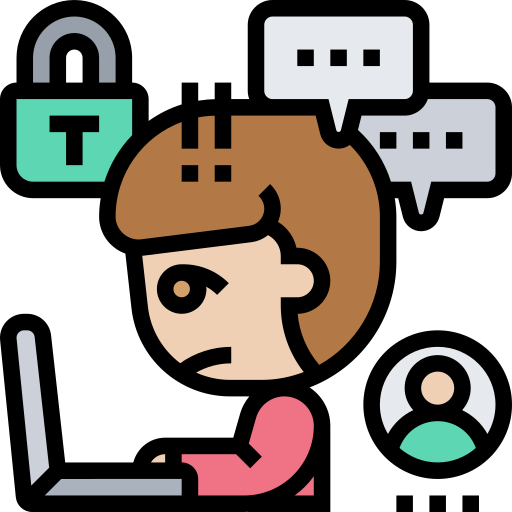

This is Group 10 and the members are:
Imran Ngugi from Rusinga Schools.
Jamie Njuguna from Rusinga Schools.
Our project is on cyberbullying.
To make a safer Internet, you will need to stop cyberbullying.
Cyberbullying is the use of cell phones, instant messaging, e-mail, chat rooms or social networking sites such as Facebook and Twitter to harass, threaten or intimidate someone. Cyberbullying is often done by children, who have increasingly early access to these technologies.
A cyberbully is a person who tries to bully someone else online.
Examples of cyberbullying:
You should:
The effects of cyberbullying also include mental health issues, increased stress and anxiety, depression, acting out violently, and low self-esteem. Cyberbullying can also result in long-lasting emotional effects, even if the bullying has stopped.
Thank you for your time
Imran's game: